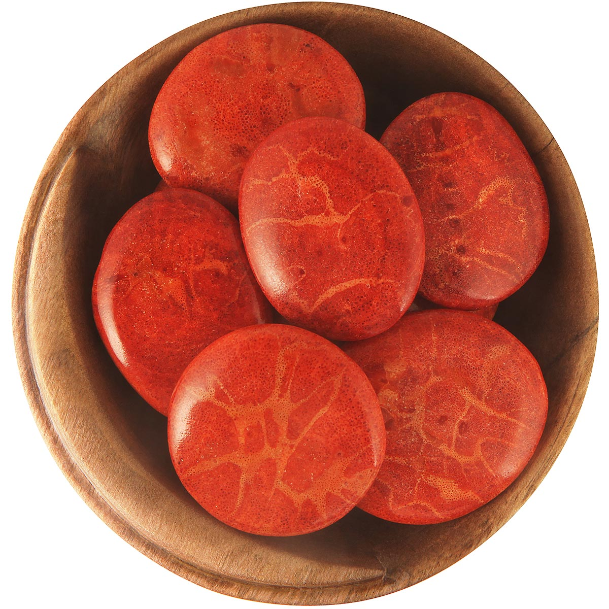

Coral

Information
Information
Coral can be found in the colors red, brown, black and blue. Coral was once believed to be a plant in the ocean but it is actually made up of polyps. Coral can be found in the waters of Africa and Japan and off the coast of the South Pacific and Australia. Coral is known as the stone of peace and transformation. It is also known as Sea Garden because of how much it looks like a plant. The stone help release unhealthy thoughts and emotions. Coral also is a big supporter mental as physical in period of change and transformation. It makes you understand that it is in your struggles and hardships that you will find the best kind of lessons and experiences. Coral also reminds you that you need to swim life's oceans if you wish to see what is out there in the horizon.
Health Benefits
Link-TextOutfitInspos
Some outfits inspos who match perfectly with the black green stone